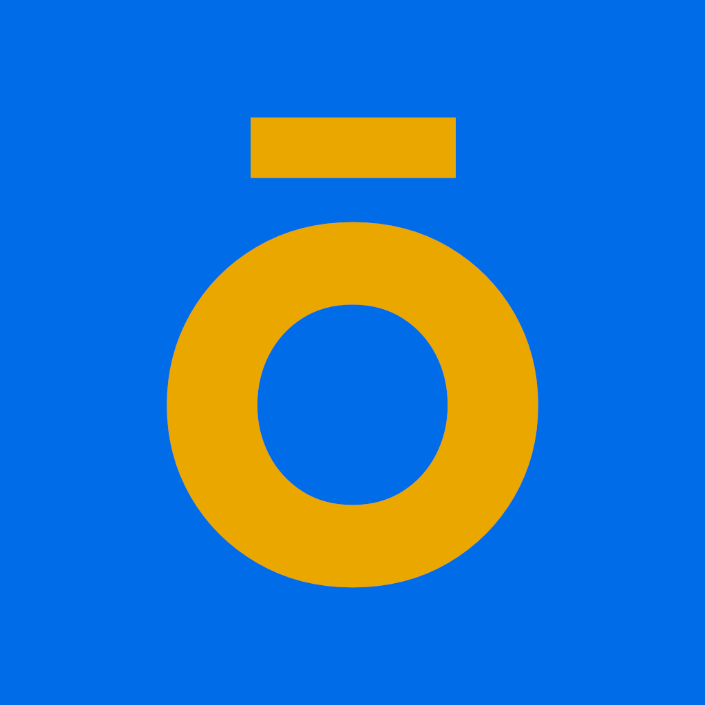

Current platform
iOS

A focused task system
toDō is built for people who want clarity without clutter. It helps you capture what matters, shape it into action, and keep moving without fighting the tool itself.
about
Most task apps either bury you in features or flatten everything into the same lifeless list. toDō aims for the middle path: structured enough to support real life, simple enough to stay out of your way.
A task can carry context, notes, timing, recurrence, and organization without becoming a ritual. The point is not to make productivity louder. The point is to make action easier.
It is a product built around attention, pacing, and usability. The interface is meant to feel clear, direct, and native rather than busy, decorative, or over-explained.
platforms
iOS
iOS 26+
iPadOS, watchOS, & macOS
iPhone first, then the rest of the Apple ecosystem in measured stages.
why it matters
Tasks, notes, timing, and organization where they belong.
Deliberate hierarchy, cleaner decisions, less visual drag.
Built to help people keep moving instead of constantly resetting.
Designed to feel at home on the platforms it runs on.
direction
toDō starts with the essentials: task creation, structure, clarity, and pacing. From there it can grow into a broader system across devices without losing the simplicity that gives it value in the first place.
The aim is not to become another bloated productivity suite. The aim is to stay useful, legible, and humane as the product matures.
updates
Join the list to hear when toDō ships, expands, or opens up something new.
more
Read more about toDō on iamshift.dev, for the build, direction, and product details.
Access toDō's story